StrataFlux: Memory-Hierarchy-Native Low-Bit LLM Inference / 面向内存层级的低比特大模型推理
- 论文 arXiv:2611.08363，首版提交于 2026-11-05 17:42:06 UTC（北京时间 11 月 6 日 01:42）
- 作者 Jake Hyun、Ziyu Zhao、Jae-sun Seo、Mohamed S. Abdelfattah
- 机构 Cornell University、Carnegie Mellon University
- 代码 作者原文未给出已核验独立实现。下文结果均为作者报告值。
StrataFlux 把模型常用的低精度表示保留在显卡可直接访问的内存，再从较慢的层级按需取得少数权重通道和历史词元的额外精度。系统会分别为两条路径安排何时读、何时用，以及读晚了能否留到下一步用。论文比较了仅修正权重、仅修正 KV 以及同时修正两者三种配置。
推理时，静态量化会在生成前固定哪些数值误差可以接受，整块卸载则可能把慢存储读延迟放进每个词元的关键路径。StrataFlux 要解决的是，能否让当前输入决定恢复哪些精度，并在时间预算内把这些信息送到计算处。
1. 背景和问题
1.1 常驻位宽与搬运量
交互式生成每提交一个词元，都要访问模型参数以及此前上下文的键和值。对单条序列，投影矩阵每轮只乘少量输入，许多算术单元的空闲时间来自等待矩阵数据，而不是计算矩阵乘本身。上下文变长以后，注意力还会反复扫描越来越多的历史条目。模型能否装入显存、每个词元要读多少字节、模型输出分布和原始模型相差多少，分别对应容量、速度和数值质量。三个量会一起变化，但彼此没有固定兑换关系。缩减权重量化位数可能提高带宽利用率，也可能让注意力查询本身偏离原值。缩减 KV 位数不会省去同样一块权重读，却可能让历史词元在注意力中得到不同的份额。因而文章在权重和 KV 两侧分别做对照。
静态权重量化会先根据训练后的权重和校准数据确定编码格式。AWQ 调整重要通道的量化尺度，SqueezeLLM 用敏感度影响码本并分开存储一部分异常数值。这类决策部署以后通常不随请求变化。权重在每一步保持相同，乘到各列上的激活却随当前词元和层变化。同一列在平均校准样本里贡献有限，也可能在一个具体词元产生较大的投影误差。反过来，保留所有权重残差虽然最直接，却会恢复原来试图削减的访存。权重压缩给出的容量余量可以用来保存补偿缓存，但这部分内存也需要在总预算里计算。
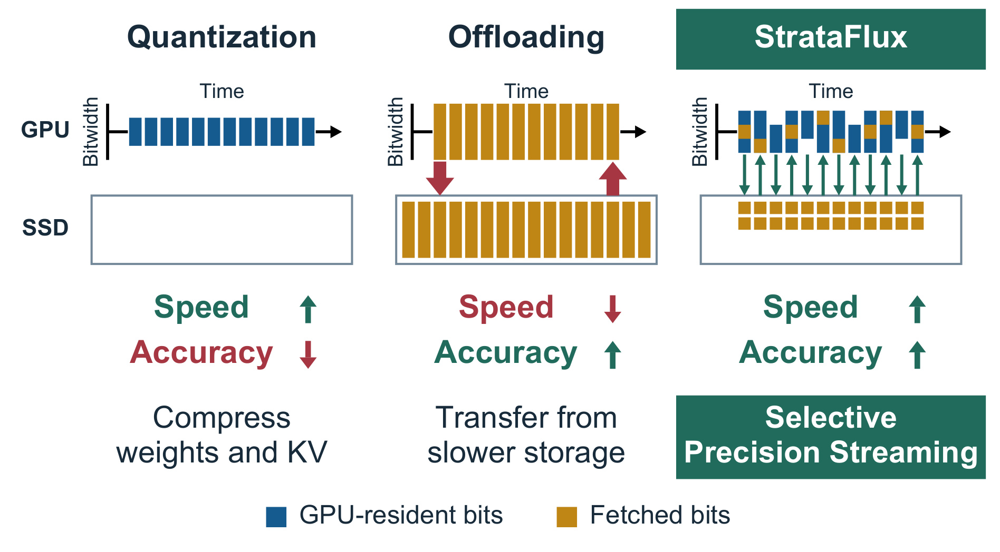
Figure 1 把三个方案放在同一张时间示意图里。横向是时间，色块高度示意位宽，蓝色表示快速内存常驻的位，黄色表示从其他层取回的位。左侧的静态量化始终读蓝色低位值，因此主路径稳定，但它从来没有为个别位置恢复数值的机会。中间的卸载在慢层保留更多精度，并在执行时把所需数据搬进来。传输方向和等待来自“计算要用这些数据”，所以慢层提供的容量不能直接转换为相同的推理速度。右侧把低位底座与额外精度拆开，快层在每步都提供可计算的完整表示，慢层只向部分位置补位。图下方速度和质量的箭头是设计意图，没有给定批量、链路带宽或任务。尤其右侧标出的 SSD 只是统一内存的一种配置，独立 GPU 的主实验把补偿位放在主机 RAM。两类平台都能放较大容量的数据，但主机读与随机 SSD 读相差很大，后文分别采用直接取回和允许错过当前步的缓存策略。
整块卸载也不总是必须同步把所有参数传完才开始整轮解码，已有系统可以在层之间流水、把部分运算移到 CPU，或者对慢层中的数据先压缩。论文的对照重点是，把需要搬运的对象缩小到残差列或嵌套量化索引，并让基础路径在某些精度补偿缺席时仍有定义。只要每个对象的低位底座仍在快层，是否等待就能作为运行时策略，而不是加载模型之前的固定选择。
1.2 误差集中与输入变化
对于权重矩阵，可以把精确投影与低位投影的差拆成各输入通道的残差贡献。一列是否值得补回既与残差大小有关，也与当前乘到这列上的激活有关。DecDEC 已沿这个方向用激活绝对值排序，取回较大的通道残差。它在当前投影拿到输入之后才能做选择，修正完成以后，下游操作才有机会消费投影结果。因此，即使 GPU 算力尚有余量，隐藏主机读的窗口也受这一层的投影时间限制。精度越低、硬件越快，这个窗口反而越短。论文在 DGX Spark 上给出一个量级对照，独立的 2 KB 随机 SSD 读延迟中位数约 200 微秒，P99 为 709 微秒，而 Llama-3.1-8B-Instruct 的 YAQA 2-bit 输出投影平均只需约 21 微秒。两项测量的单位相同，分别回答随机读和一个算子的耗时，不能直接推算请求延迟。
历史 KV 与权重的差别在于，它由具体请求的历史产生，长度还会随推理增加。在一个问答请求中，同一段上下文可能先支持主题定位，接着支持核对具体数字，后续再用来复查某个实体。每一步的注意力分布变化，使固定保留一批高精度词元不一定合算。稀疏注意力可以不读低权重条目，SpeCache 一类方案则保留全部低位条目并对选中项取回完整高位值。前者会改变被参与聚合的集合，后者会把低位已经知道的一部分信息再搬一次。StrataFlux 选择保留所有位置的低位贡献，仅把选中项所在的区间细化。初始低位查询给出了候选顺序，但如果粗分数恰好低估了有用位置，该位置就可能错过修正。
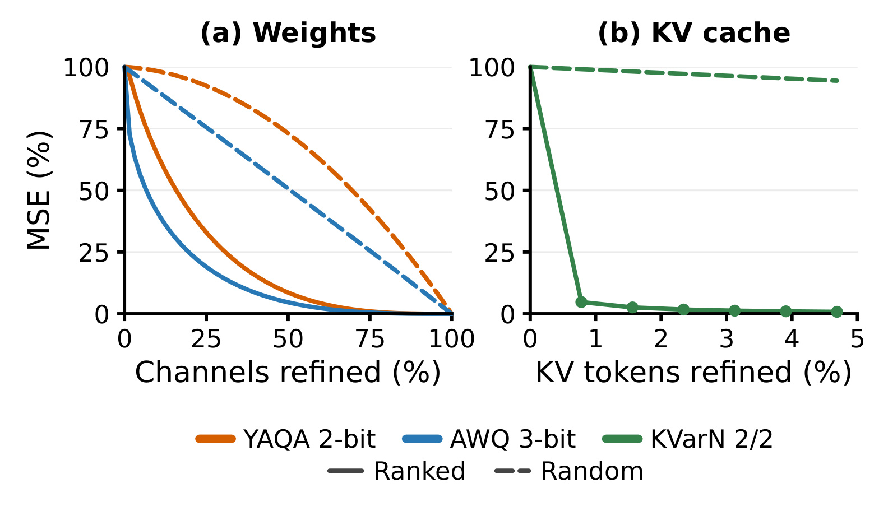
Figure 3 左图将不同权重量化底座的输出误差归一到各自未修正时的均方误差，横轴是被修正通道的比例。实线根据输入激活排序，虚线随机选取；对两种量化方式，排序曲线都在较小覆盖比例下先降下来。右图把横轴换成被恢复到 FP16 的历史词元比例，实线用低位键估计的注意力排名，虚线仍是随机。少量词元对注意力输出误差贡献大，图上两条线在横轴前段就明显分开。两幅图汇总了不同词元和层的局部误差，绝对百分比不能直接互比。右图将选中条目恢复为 FP16，因此只证明依据粗分数选择有作用，不能替代之后嵌套编码的比特预算比较。左图的同向趋势表明，哪怕底座校准已为误差补偿做过优化，当步激活仍有额外区分信息，但该观察没有说明某一固定通道比例适合所有投影。若运行时每步预算紧，排序在可用预算之前的前几位是否稳定，比整张误差曲线的最终端点更有关系。
这些观察还不能保证更好的词元决策。局部投影均方误差、相对 BF16 分布的 KL、下一词元的交叉熵以及整道题答对的概率，衡量的是不同东西。比如 MLP 的门控会放大或抑制局部扰动，注意力分数在 softmax 后又要重新分配归一质量。模型在数学推理中还会沿着先前生成的词元继续，微小变动有机会改变后续路线。实证需要同时回答修正有没有把分布拉回高精度参考、是否减少长上下文任务错误、是否为了这一点牺牲过多吞吐。论文用位宽、误差、任务和运行轨迹分别回答这些问题，并把独立显卡和统一内存分开测量。
2. 方法
2.1 精度如何分布
低位底座覆盖全体权重和全段历史，后备层只存修正所需的附加表示。 对独立显卡，GPU 显存保存量化权重、紧凑 KV 和运行所需的少量辅助信息，补偿位放进锁页的主机 RAM，按选择索引由 GPU 直接读取。对 CPU 和 GPU 共用 RAM 的平台，常驻部分留在共享 RAM，额外精度放在 SSD，经 CPU 读到 GPU 可访问的缓存。常驻表示与额外位的格式不同，后者不需要保存两份完整原值。图示把二者之间的时序关系放到 Transformer 的主操作上看。
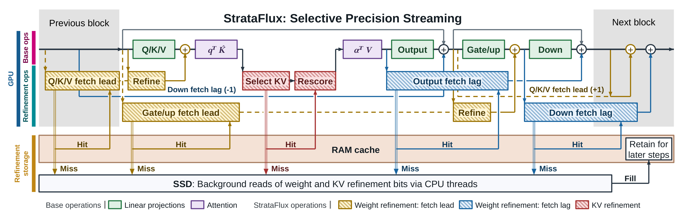
Figure 6 最上方是模型主路径，从查询键值投影走到注意力分数、值加权、输出投影以及门控前馈。黄色和蓝色分别表示取回提前与修正滞后，红色表示注意力内部的 KV 修正。黄色提前选择的箭头跨出当下投影，在之前能访问残差流时就开始准备下一项修正，到原投影获得真正输入后才计算残差乘积。蓝色路径围绕输出投影与下投影，这些修正可以在主路径继续后再向残差流相加，因此它们也能与隔壁块的其他操作重叠。图中出现的前一块下投影和下一块查询键值是实际依赖方向，说明并行跨越块边界。红色的注意力路径不同，第一次评分提供词元组选择，选中项需要先重构并重新计分，才有最终值聚合；同一注意力内部不能把这段依赖随意挪到前后层。中间的 RAM 层展示 GPU 可直接读取的缓存。选择命中时可使用额外精度，未命中时可以让当步继续使用常驻低位值，并由底部 CPU 线程从 SSD 异步填充。最右侧保留给未来步骤意味着一次读未赶上当前期限仍可能减少以后读量。该图只画统一内存配置，独立显卡的后备层是主机内存，不经过图里的 SSD 背景读；图中也省略部分 Transformer 操作，不能按箭头数估算完整延迟。落到调度器时，需要先判断当步是否可容忍缺失，再处理命中的可用期。即使低位运算顺利完成，异步回填也必须在后续读取前明确缓存对象的归属和有效性。图中权重补偿随着模型固定而被许多词元共享，历史缓存则对应当前序列的具体层和头，实际复用对象并不相同。
2.2 权重残差如何参与投影
权重修正保留底座的编码格式和低位投影内核。它先按一千零二十四个输入通道切成块，每块选出激活绝对值最大的若干列。每个投影组的预算可以单独设定，分别对应查询键值、注意力输出、门控与上投影、下投影。选中列的补偿以低位整数和单独的尺度存储，能够连续读出。作者先用原矩阵与底座矩阵之差表达误差，再写出真正执行的近似投影。
符号解释（式 1–2） $W$ 为原权重，$\widehat W$ 为量化权重反量化后的矩阵，$R$ 为两者之差。$x_i$ 为当前输入向量的第 $i$ 项，$R_{:,i}$ 是该通道的完整残差列。$S(x)$ 是本次每块选中的输入通道，$C$ 是解码时可使用的补偿矩阵，$y^\prime$ 是修正后的投影输出。绝对值只用于选通道，真正乘积保留激活符号。若只取少量列，直接编码完整残差的选中部分不会考虑遗漏列和选中列之间在校准集上的相关性。论文在不改底座的前提下，让一个修正列可以适度补偿其他未取回列。
符号解释（式 3–4） $k$ 是每块选中数，$z_k(x)$ 把每块未选中的激活置零。第一项衡量修正投影和完整残差投影之间的误差，$\lambda$ 约束矩阵偏离原残差的程度，$\|\cdot\|_F$ 为矩阵的 Frobenius 范数。$M_k=\mathbb E[z_k(x)z_k(x)^\top]$ 为选中激活的二阶矩，$G_k=\mathbb E[xz_k(x)^\top]$ 为全体激活与选中激活的交叉矩，$I$ 为单位矩阵。论文从小规模 RedPajama 样本估计矩，用 $M_k$ 的平均对角元素作为默认正则系数。这个闭式关系在推理前求解，随后把拟合出的矩阵编码成 4 位，推理时没有更新权重。$k$ 或数据分布改变会改变遮罩统计，拟合值对具体配置有依赖。
符号解释（式 5–6） $g,u$ 是低位门控和上投影，$\phi$ 为门控激活函数，$\odot$ 表示逐元素乘，$h$ 是门控后的神经元激活，$y_q$ 是低位下投影。神经元方案按 $|h_j|$ 选择集合 $N(h)$，把所选神经元的门控修正行 $c_j^g$、上投影修正行 $c_j^u$、下投影修正列 $c_j^d$ 和 BF16 下投影列的 4 位副本 $d_j$ 一起存放。先得到修正激活 $h_j^\prime$，再把激活改变和原激活对应的下投影残差都加回低位输出。一个神经元的三段依赖得到一起修正，代价是打包更大且需要额外下投影副本。它也只能在算出低位门控后挑选，因此和按输入列提前选取是不同的执行路径。
2.3 KV 嵌套编码与注意力更新
论文基于 KVarN 的常驻缓存编码，把每一个量化区间等分为更小的区间，将其中的索引作为补充位保存。运行时对选中的条目，用原始编码定位粗区间，再用补充索引取出更细的代表值。键和值独立编码，可以采用不同的基础位宽。全部历史始终拥有低位键和值，因此只需为被选中的位置更新分数和值，无需因取回配额有限而丢弃未选中词元。在预填充中先使用未压缩键和值计算注意力，再建立低位和后备两种表示。解码新生成的 KV 随分块完成后按同一规则编码。
符号解释（式 7） $i$ 是历史词元位置，$j$ 为 KV 头，$H(j)$ 是共享该 KV 头的查询头集合，$\alpha_{h,i}$ 是用常驻低位键得到的注意力权重，$s_j(i)$ 是用于选择的分数。取最大值让一个查询头强烈依赖的位置不会因为其他头分值低而被平均掉。实现按 KV 头把邻近词元成组，组分数先按头把组内权重相加，再在共享查询头之间取最大值。成组会顺带搬运一部分当前用处较小的词元，却能减少零碎读取、延长连续传输。主配置在独立 GPU 上以两词元为一组，在统一内存上以四词元为一组。
符号解释（式 8） $\ell_i,v_i$ 是低位键和低位值产生的注意力分数和值，$Z$ 是其 softmax 分母，$o$ 是低位加权输出。$S$ 是选中位置，带撇号的分数和值使用补充位重建。$Zo$ 恢复低位加权和的未归一化分子，再从分子和分母同时减去各选中位置的旧贡献、加入其新贡献。只替换值而不更新归一项，会忽略高位键改变分数后引起的概率质量重分配。这一式与对指定的混合精度键值重新聚合相符，仍依赖低位第一轮排序，不能保证选择到所有用全精度评分才会发现的位置。它也无法让当前步注意力的修正越过重评分依赖，运行时用连续读取和融合值累加削减开销。
2.4 跨块调度、缓存和调优
权重路径通过输入位置和输出位置的差异延长交付窗口。查询键值、门控和上投影从残差流读取输入，可以提前若干块，先对旧的残差状态施加目标投影所在的归一化，再预判通道并开始读取。真正计算仍乘目标投影的当步激活。注意力输出和下投影向残差流写入，作者选择让基础值先推进，把修正残差推迟到后续加法点。提前选择可能选错通道，推迟加法改变了中间层见到的数值，两者都要为隐藏更多传输时间支付近似代价。位移以 Transformer 块计，也可以按半个块定义。位移越大通常有更多重叠机会，但应单独测试对各投影组的影响，尤其是门控与残差的相对顺序。
在统一内存上，权重补偿按各投影组存到按最近使用淘汰的缓存中，KV 词元组在所有头和层间共用独立容量。预填充写入 SSD 后保留最新编码组，解码新组也直接进入缓存。对于未命中，主结果选择直接用低位值，让 CPU 异步读回后供未来步骤使用。这一策略避免把 SSD 读延迟直接置于前向关键路径，因此其主结果设位移为零。若选择等待读回再补偿，可换更完整的精度，延迟和吞吐会受后台读限制。独立显卡直接读取主机内存，不需要为 SSD 建同一种中间缓存，跨块重叠仍有作用。作者在附录中分别给出了两种策略的实验，不能用某个平台的最佳参数替代另一平台。
调优器在指定的相对低位底座降速上限下搜索配置。它分别尝试各投影组的位移、MLP 的按列或神经元束修正，以及用于补偿的 GPU 线程块数，再用端到端解码吞吐筛选共同通道预算。通过限速条件的配置按保留文本上对 BF16 的 KL 选择，然后增加个别投影组预算，只要测得的降速仍符合限制。最后按选中预算拟合残差并编码。更多线程块加快补偿也可能抢占原有投影的资源；因此调优需要知道实际模型、底座格式和设备。五个百分点的限速是权重部分在作者设置下的选择条件，不能自动扩展为有 KV 修正的完整服务承诺。
3. 实验结果
3.1 嵌套修正的比特预算
论文实现基于 llama.cpp，覆盖 CUDA 和 Metal。主文以 WikiText-2 的 2K 窗口评估权重修正，用 PG-19 评估长文本的困惑度和分布偏离，以 RULER 的不同长度测试历史检索等任务，并用 Qwen3-8B 测 MATH500 与 AIME 2024/2025。AIME 结果是每题八次采样的平均正确率，不是从八个答案挑一个正确的通过率。PPL 越低意味着给真实下一词元分配的平均似然越高，KL 越低表示更贴近 BF16 参考分布。前者和后者都不直接等于回答正确率。速度一般使用论文的 llama.cpp 实现，部分已有基线通过各自运行时测试，跨运行时对照应连同执行路径一起看。权重单项、KV 单项、联合是三个条件，不把三处最强点拼接。
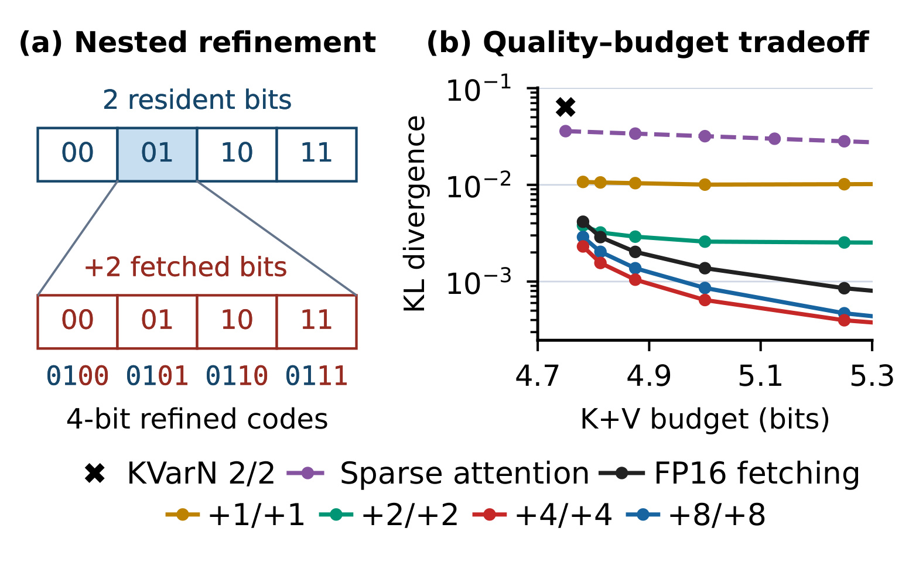
Figure 2 左图用两位常驻编码做示例，补两位把选中粗区间再分成四个子区间。右图的横轴是平均键和值对的总比特预算，包含常驻、取回和元数据，纵轴是相对 BF16 的 KL 且用了对数轴。相同横坐标不是同一取回比例。不同补充位宽的策略要用不同数量的词元来换取相同平均成本。所有方法以 KVarN 2/2 为常驻参考并使用低位键权重选词元；稀疏注意力只保留选中的 FP16 条目，完整替换和嵌套修正则继续使用其余低位条目。图里补四位和补八位的曲线低于完整 FP16 替换，表示用更少的单条传输可以在同一预算下修正更适合的覆盖范围。补一位的曲线较早趋平，显示每个位置补得过少也可能受精度限制。注意横轴并非峰值内存，更不是实测 I/O 延迟。实际部署还须看分组大小、需要分开编码的元数据以及每次随机读的固定成本。这个对照主要说明编码应该和选择联合设计，尚不单独验证 SSD 后台取回在每个延迟档都划算。
3.2 跨块调度与权重修正
作者先用 Figure 4 单独控制提前选择和推迟相加。提前选择的效果以原投影输入选择时的均方误差下降量为分母，延后相加则对全通道修正以隔离位移影响，测相对高精度输出的 KL。小位移仍保留相当比例的减误差效果，长位移不能无代价外推。Figure 8 固定每块三十二个通道并对四种投影组采用同一位移，较快的 AWQ 3-bit 通常要比 YAQA 2-bit 用更长重叠窗口。独立 GPU 上的系统轨迹说明位移如何改变等待。
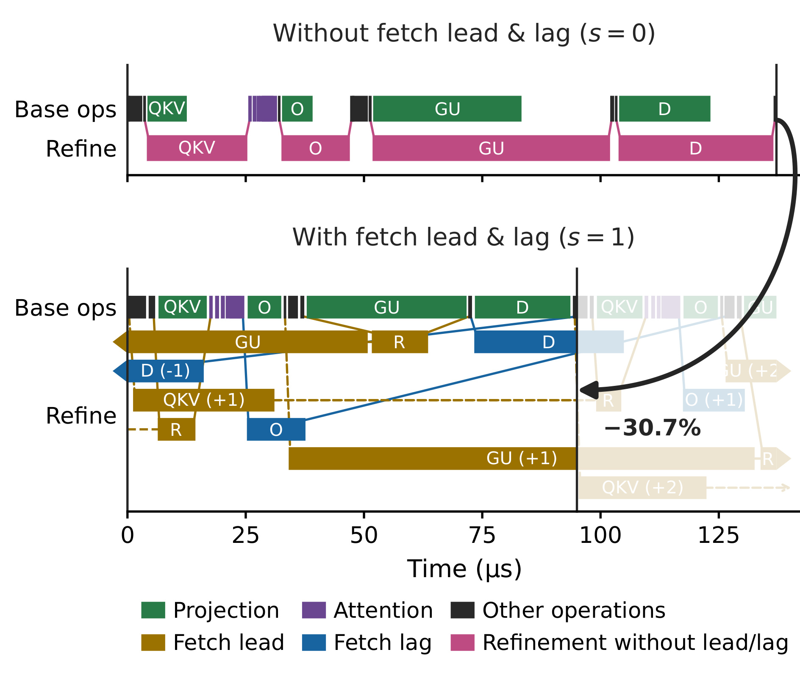
Figure 7 上下两组是 RTX 5090 上运行 Llama-3.1-8B-Instruct 的 AWQ 3-bit 权重，同为每块三十二通道。上组位移为零，粉色修正落在原投影附近，主计算在 QKV、输出、门控与上投影、下投影处出现等待。下组把提前读和滞后加分到跨块的区间，带前后块下标的色块仍要消耗运算时间，只是与这一步的其他操作相叠。横轴为微秒，黑箭头对比轨迹里的块执行区间，标记缩短 30.7%。这不等于整条请求节省 30.7%，也不意味着任何量化方式的吞吐都提高同样比例。测试对照是相同修正预算下的零位移调度，没有用完全不修正的底座作为加速分母。KV 修正自身的重评分仍在注意力内，后端的队列等待、预填充和跨请求批量也不在这个单块轨迹里。它直接支持的是并行区间确实跨块扩张，以及原先在投影后可见的等待被压短。横向条形的长度还不能直接相加求每步总成本，因为下组同一时间有不止一个内核在运行。同一条微秒时间线上，除了主投影和修正，还穿插注意力与其他算子；被移走的是部分等待空洞，没有消失的是补偿所需的内存带宽和算力。附录的 CUDA 流安排通过事件建立先后关系，使低位投影与修正有机会并行，只有到真正的读写依赖处才汇合。这里也解释了调优时为何要限制修正线程块数：增加线程块可缩短修正自身执行，但若占据基础投影的资源，关键路径可能反而变长。部署若希望判断是不是解决了相同的瓶颈，应对齐投影组、基础内核和激活大小后再比较，并用相邻块的依赖边验证哪些等待真正被移到后台。仅看总 GPU 利用率无法确认主流是否仍在等待。
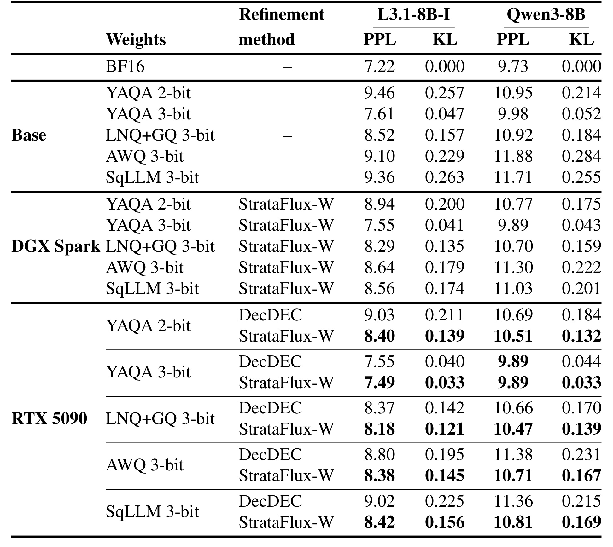
Table 1 左侧列给出模型底座和修正方案，右侧分别是 Llama-3.1-8B-Instruct 与 Qwen3-8B 的 WikiText-2 PPL 和相对 BF16 的 KL。顶部无修正区用于核对位宽和量化格式，DGX Spark 只列 StrataFlux-W，RTX 5090 成对列 DecDEC 和 StrataFlux-W。对应 Llama YAQA 2-bit，在 5090 上无修正 PPL 为 9.46，DecDEC 为 9.03，StrataFlux-W 为 8.40；KL 为 0.257、0.211、0.139。BF16 参考 PPL 为 7.22，说明减小了误差而未消除。Qwen YAQA 3-bit 在同平台两种修正的 PPL 都是 9.89，KL 则分别为 0.044 和 0.033，不能写成每个指标都严格更好。DGX Spark 上的 Llama YAQA 2-bit 修正结果为 8.94，后备层和取回策略不同，也没有对应 SSD DecDEC 行可作配对。这里的五个百分点是各配置调参的相对降速预算。数学结果由独立 Table 2 给出，Qwen3-8B YAQA 2-bit 的 AIME 在权重修正单项中为 19.2% 至 46.7%，对应 MATH500 77.2% 至 92.4%；后文联合修正的 11.0% 起点属于另一组同时压低 KV 的实验。RTX 5090 的质量提升不能推回每个边缘平台。还可以沿着底座往下比较同一模型的绝对质量：不带修正的三位 YAQA 在 Llama 上为 7.61，而二位加修正仍为 8.40。将二位值选作参照能显示补偿回收了多少误差，将三位值选作参照才能判断加一些常驻空间是否更直接。两种问题的分母不同。论文也比较了 AWQ 与 SqueezeLLM 的低位格式，在同一设备上修正收益并不相同，说明误差结构对通道排序有影响。这里的 KL 还不是逐词表类别计算的完整散度。附录保留 BF16 分布概率最高的一千零二十四个词元，其余词元在两边被合并成一个类别，结果用于同口径比较近似分布。若下游关注某个很少出现却很重要的标识词，就需要补充该类别的概率和排序，而不能从聚合 KL 直接判断该词元已恢复。用同一量化底座、同一窗口和相同参考模型作配对，是从这张表迁移结果的最小条件。例如对语义标识类输出，可另测关键标识在候选分布里的概率偏移和前几名排序。
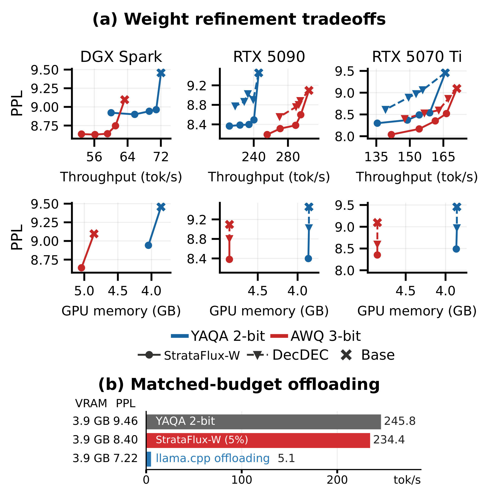
Figure 9 上半部跨 DGX Spark、RTX 5090 和 RTX 5070 Ti，纵轴都是 Llama 模型的困惑度，但横轴上排是解码吞吐、下排是 GPU 可用内存占用，后者只用五个百分点预算配置。连线表示不同降速预算的解法，不能把同一条线理解为一次运行的时间曲线。下半部固定 5090 的 3.9 GB 显存，对比 YAQA 2-bit 底座、StrataFlux-W 与 llama.cpp 的 BF16 部分卸载。三组 PPL 分别是 9.46、8.40、7.22，吞吐分别为 245.8、234.4、5.1 tok/s。StrataFlux-W 保留低位底座约 95.4% 的解码吞吐，用主机 RAM 提供额外精度。BF16 部分卸载提供更好的 PPL，但吞吐分母是同显存约束下的一个实现，不能据此说 StrataFlux 对所有卸载系统都具有相同倍数。独立显卡的 3.9 GB 也没有计入主机侧附加权重，不能作为整个设备的存储需求。若任务优先要求更低 PPL，仍需要检查更高位底座在相同系统容量下能否运行。还需区分困惑度数据和计时工作负载。图中质量用文本窗口计算，附录把 NVIDIA 的权重单项 WikiText-2 解码计时定义为空上下文；长文权重单项速度另在 PG-19 的 128K 设置记录。空上下文中权重搬运的份额更显著，长上下文有更大的 KV 读量，因而可供其他计算重叠的时段和整步的时间组成都会变化。上半部三个设备之间的曲线横坐标刻度相差较大，也不能按相同画面位移读出相同吞吐增益。比较某台设备的可用配置，先在相近吞吐或相同显存处读同模型的点，再看后备层是否相同。设备迁移时保留相同目标降速约束，重新测实际速度和质量，比照搬论文给出的配置更容易区分是模型误差结构变化，还是传输端已经变成瓶颈。速度约束附近的微小差别应结合设备运行方差读，图中没有跨机器的置信区间。
3.3 KV 修正和并发开销
主设置每个键和值补四位，挑选比例为词元组的 1/128，即约 0.78%，其余历史仍在注意力中。权重固定为 BF16 之后，单独评估 KV 路径，避免权重和查询质量同时变化。
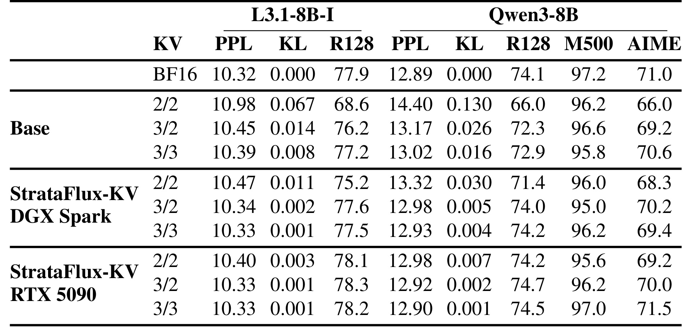
Table 3 左两组列对应两模型的长文本困惑度、KL 和 128K RULER，右边两个数学列为 Qwen3-8B。先读同一常驻位宽上下对照。RTX 5090 上 Llama 的 2/2 KV 从 PPL 10.98 降至 10.40，KL 从 0.067 降到 0.003，RULER 从 68.6% 到 78.1%。对应 BF16 参考为 10.32、0 和 77.9%，RULER 的微小反超是该次报告的点估计，不能证明普遍超过全精度。DGX Spark 的同一位宽下则是 10.47 和 75.2%，从 SSD 取回时的缓存和跳过策略使平台间不能只比较位宽。Qwen 的 2/2 KV 在 5090 上，RULER 由 66.0% 到 74.2%，AIME 从 66.0% 到 69.2%，但 MATH500 从 96.2% 降至 95.6%。同一组同时出现 PPL 改善和任务精度回落，说明按某个任务上线需要专门验证。更高基础 KV 位数在未修正时已缩小差距，例如 Llama 3/3 的 PPL 是 10.39，修正到 10.33，边际收益小于基础 2/2。运行预算更宽时还应和直接增高基础位宽对照。只有在同一模型、权重精度和缓存配置下，这些相邻行才能支持修正效果的归因。附录逐长度表还展示了强静态量化和修正之间更细的相对位置。Llama 在一百二十八千词元时，两位加修正的 RULER 只比 KIVI 四位高零点一个百分点，短窗有些行反而略低；与原始两位的提升明显大于与较强底座的差距。PG-19 也并非无条件生成整窗来算 PPL。作者取足够长的十七本测试书，每本取十六个窗口，先预填充到末尾两百五十六个词元之前，再以教师强制方式顺序计分。不同长度截取保留同一尾部，利于比较上下文长度而不能替代完整自由生成。基础缓存还保留开头一百二十八词元和当前一百二十八词元缓冲的 FP16，这些空间已计入容量。因此“每个 KV 都两位”只是主体编码的简称。拿这张表选择线上配置时，应把主任务和该任务的上下文区间同时配对，再查看基础两位对照与较高位基线，避免把一个数据集的微小反超误写为所有低位任务的结论。
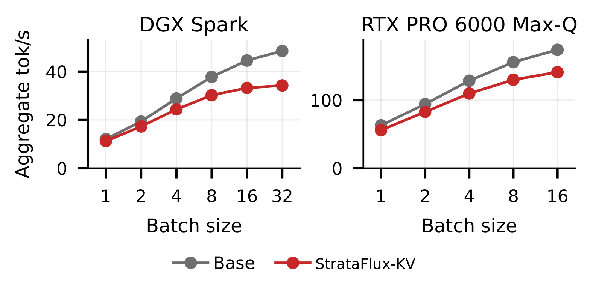
Figure 11 用相同 Llama 模型与 128K 的 2/2 KV，比较 DGX Spark 和 RTX PRO 6000 Max-Q。横轴是 batch 数，纵轴是所有序列加起来的 tok/s，不是单请求速度，灰色是低位基础实现，红色启用 KV 修正。两条线都可随批量变高，但红灰间距在更大批量变大。论文正文给出的对照是 RTX PRO 6000 Max-Q 在 batch 1 和 16 各损失 11.2% 和 18.8% 吞吐，DGX Spark 分别损失 7.0% 和 25.4%。Spark 的最大绘制批量为 32，独立显卡面板停在 16，因此也不能比较两条曲线的最后一点作为相同批量结论。随着请求增加，更多彼此不同的查询争夺补偿读和注意力内核资源。权重轨迹中的跨块重叠不能直接移植到这里。图不报告多租户延迟分位数，也没有给出不同实际长度的混合负载。工程上若线上依赖较大动态批处理，应按实际批量分布测试吞吐损失，并同时记录整体吞吐和每请求的解码间隔，避免以其中一个代替另一个。独立卡和统一内存在这个图中不能被当成只有存储介质不同的受控试验。平台同时改变 GPU 算力、主存带宽、主机互联以及可用并发范围，组长度也不同。红线在每个已画出的批量下仍低于本平台灰线，说明作者选择的设置确有额外计算或搬运负担。它是否换来单位硬件更多可接入请求，还取决于压缩后新增的并发容量和真实长度分布，单凭总吞吐下降比例或一个缓存尺寸都推不出来。另一层边界是比较固定了名义上下文长度，生产中的批量还会因短长请求混排和提前结束波动。若选择性补偿要用于服务，测试应区分共享 GPU 容量导致的调度等待、注意力每步重新评分的时间和后备层未命中的传输延迟。同一个总吞吐数无法指出哪一层发生瓶颈，也无法判断个别请求是否跨过响应期限。
3.4 权重与 KV 联合修正
联合配置仍维持原先的常驻位宽，模型质量变化由权重修正和 KV 修正共同作用。粗查询来自量化权重，因而权重修正有可能改变 KV 选择集合。单项指标的变化不必严格相加。论文用两组八十亿级模型与不同常驻位宽报告联合结果。
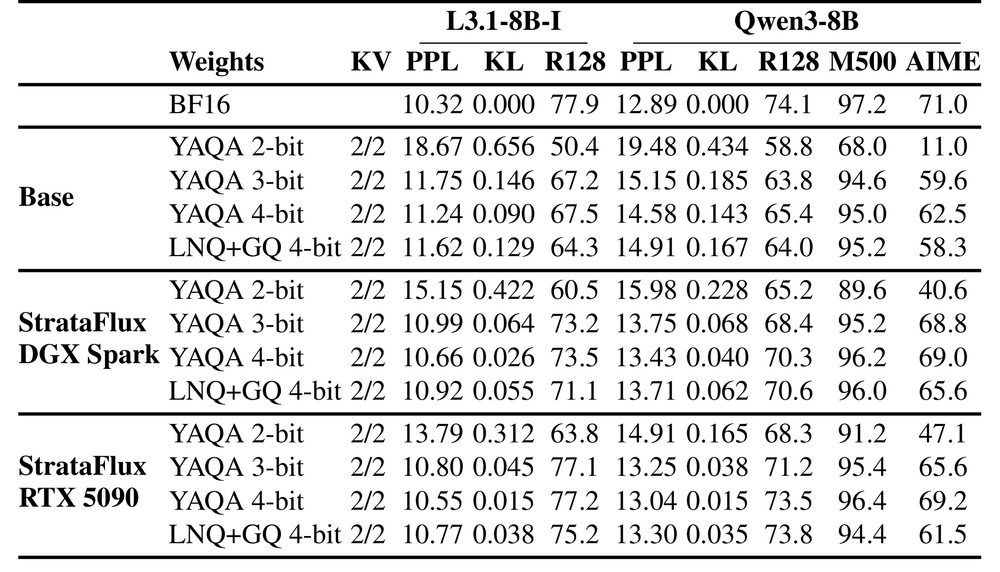
Table 4 中每组仍固定键和值的常驻位宽，按权重底座分行，未修正、DGX Spark 和 RTX 5090 分块。Qwen3-8B 在 5090 的 YAQA 2-bit 权重和 2/2 KV 上，AIME 从 11.0% 提升到 47.1%，对应绝对增加 36.1 个百分点；MATH500 从 68.0% 到 91.2%，128K RULER 从 58.8% 到 68.3%。这些数字来自不同任务，作者报告相同的是 GPU 常驻位数，增加的主机内存和取回成本仍在。相邻 BF16 参考是 AIME 71.0%、MATH500 97.2%、RULER 74.1%，因此不能称为恢复全精度。把权重常驻改到 YAQA 3-bit 并保持 2/2 KV 时，Qwen 的未修正 AIME 已有 59.6%，联合修正到 65.6%。相对较大的提升部分来自极低精度下的较弱起点，而更好的绝对结果需要更高常驻预算。相同 2-bit 联合方案在 DGX Spark 得到 40.6%，没有 5090 的 47.1%。Llama 同一组合的 PG-19 从 18.67 到 13.79，RULER 从 50.4% 到 63.8%，说明这个恢复不是 Qwen AIME 指标的独有现象，却不能据此合并为一个跨模型的统一增益。从困惑度和 KL 看，修正对更低位的模型也较明显。Qwen 的二位联合 PPL 从 19.48 降为 14.91，KL 从 0.434 降为 0.165，两者仍远离 BF16 参考 12.89 和零。四位 YAQA 联合时 PPL 达到 13.04，AIME 到 69.2%，代价是更宽的常驻权重。这个横向对照把两个工程问题分开：有容量约束时能否挽回二位配置，以及在更宽松容量下为了接近 BF16 应挑哪个底座。不能用前者较大的提升比例证明二位是后者的最优点。另一个值得留意的对照是数学题的分数来自采样，而长文困惑度按原答案词元给分；在同一次推理中并没有同时观测到表里全部维度。数学结果也没有逐题列出改正与新失败的交叉表，无法看出能力被恢复到哪些题型。需要做应用评估时，可以把基准中的配对比较扩展到任务切面和生成样本，使平均值和个体失败都可追踪。这也能识别提升是否主要集中在那些原先已接近答对的样本，而核心高难样本的错误保持不变。
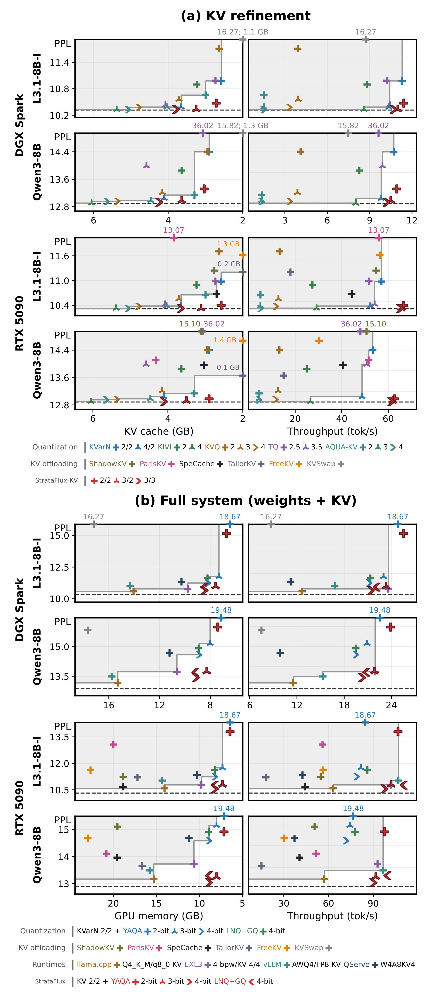
Figure 10 上半部固定 BF16 权重，左轴比较仅缓存容量对应的 PPL，右侧看解码吞吐。下半部改为联合修正，内存统计纳入权重和 KV，Spark 同时计其共享 RAM 缓存。纵轴均为 PG-19 的 128K 困惑度，虚线是 BF16 参考，灰边界表示列出的基线前沿，图外高误差点用文本注明。摘要所称的约一半内存可在附录 Table A33 直接对齐。RTX 5090 的 Llama YAQA 3-bit 权重加 2/2 KV 修正占 7.3 GB，PPL 10.80、吞吐 102.0 tok/s，对照 vLLM AWQ4 加 FP8 KV 占 14.3 GB，PPL 11.03、106.8 tok/s。7.3/14.3 约 51%，吞吐反而略低约 4.5%，不能写为既减半又加速。两种实现的量化格式和运行时不同，这个表的容量只计存储的权重和 KV，不是包括所有预分配工作区的峰值显存，也不计主机保存的补偿。上半部的横坐标只计 KV，不能拿它和下半部总量直接相减。图的工程意义是给定一个部署场景，能找到位宽和后备层的组合点，再单独核实资源和服务延迟。基线前沿还混合了不同侧重点的方案。有的只减少常驻 KV，有的取回高精度条目，有的改变权重与激活格式。在下半图，某点比另一个点有更低 PPL，可能以更慢的运行速度或更多后备容量为代价。尤其图外的高 PPL 点用标注值而非真实纵坐标位置呈现，不能按标注靠近轴的位置推断两点差距。附录给出的相同模型定点结果更适合做资源换算。以七点三与十四点三为例，采用的分母是后者的已存储权重和 KV，不能用其比例估计整机能同时服务的请求数。真实计费还取决于显卡其余缓冲、输入形态、可共享的模型权重、副本和是否独立分配主机内存。测速也以预填充之后的若干解码步为中心。对于预填充很长、输出很短的请求，即使图中两个方案的解码速度接近，整个请求的耗时也可能由论文未在该图对比的前段主导。
3.5 消融与分层容量
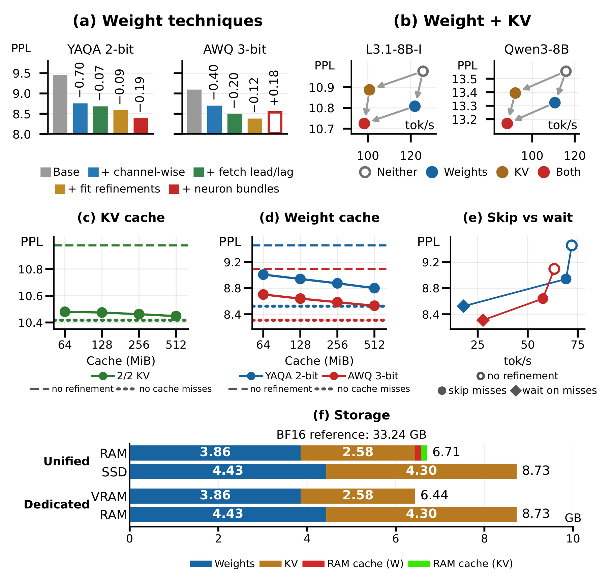
Figure 12 的六个面板分别回答不同问题。左上逐步加入列修正、跨块调度、拟合和神经元束，各步都按五个百分点降速上限重新调优。YAQA 2-bit 末尾换神经元束进一步降低 PPL，AWQ 3-bit 强制采用神经元束时则回升 0.18，说明组件对底座有依赖。这些差值是重调之后的整体配置差，不等于一次仅改一个内核的净效应。右上用同一组 YAQA 3-bit 权重和 3/3 KV 切换修正开关，在该两个模型上联合质量改善近似叠加，但吞吐也受两路开销影响。中排先后改变 KV 缓存和权重缓存容量，再对比跳过与等待。更大缓存通常降低跳过所损失的精度，等待虽能获取更多有效值，却明显减少每秒生成词元，尤其 SSD 随机读进入当步关键路径时。最下面给出 128K 下 Llama 的实际存储层分解。2-bit 权重和 2/2 KV 常驻部分各为 3.86 GB 和 2.58 GB，独立显卡合计 6.44 GB，附加精度在 RAM 约 8.73 GB；统一内存 RAM 约 6.71 GB，附加精度转存 SSD 约 8.73 GB。图中的 33.24 GB 是 BF16 权重和 KV 的参考总量，不能拿 6.44 GB 当整个系统持有的数据。缓存里的权重补偿和 KV 补偿只占其中小部分，但后备层仍要保留全集以支持未来请求。同图的缓存策略可以回到附录数值核对。在一百二十八兆字节的权重缓存、DGX Spark 与 YAQA 二位配置下，跳过的困惑度为 8.94，速度 69.2 tok/s；等候使困惑度为 8.52，速度降至 17.9 tok/s。两种策略使用相同缓存容量，变化来自当前步是否阻塞等待。应用需要的是按响应期限限制缺失风险，而非把等待的质量结果与跳过的速度结果拼在一起。存储面板的两层容量也不能替代这些运行测量，因为两种策略可以存同样大小的数据，却在当步关键路径产生完全不同的代价。
附录还有两个容易忽略的控制。Table A35 的同实现四联对照固定常驻位宽，并分别开关两类修正，减少因为跨框架比较混入的吞吐差异。该表明确四组使用同一 CUDA 注意力实现。表 A34 的静态基线吞吐与表 A35 的四联控制吞吐不同，读者应在同表成组读取。Table A40 只报告 MacBook Air M3 上一个 16K 顺序打分窗口及其速度，能说明存在 Metal 实现，无法代替多设备、多请求的服务压力测试。论文整体展示了选择性补偿如何重新分配存储和数据流，而量化精度、等待策略、请求形态还需要分别对齐才能复现。
4. 总结
4.1 哪些场景值得优先验证
StrataFlux 最有价值的变化是让一次推理保留可以立即运行的低位底座，同时让需求最集中的数值获得更高精度。它展示了三项可以分别测的能力。第一是稀疏选择是否能捕获大部分误差，第二是补偿表示比原高精度值小多少，第三是补偿能否在依赖点之前到达。第一项在误差曲线里可见，第二项在嵌套预算实验里可见，第三项要看运行时、设备拓扑和缓存策略。缺少其中一环，较优的质量点也可能落在无法接受的吞吐档。
推荐场景可先在有生成环节的离线和在线推理分别测试。离线的内容描述、语义标注可以利用较大批量把权重复用起来，本文权重侧测得的余量未必还存在，优先比较大批量下的静态高位配置。在线有长历史、较小批量的交互型检索或推荐解释，则可能更接近论文的长上下文设置。此时关注的是回答对哪个证据、历史中哪个兴趣片段以及最终候选排序，而非仅检验语言困惑度。给低位底座留有全部历史与直接裁掉低分历史的错误类型不同。前者保留低位影响，后者完全取消贡献。如果关心的是一次上下文中的少数长尾事件，回放中可人为设置细粒度证据区间，比较固定保留、动态恢复以及不同位宽的逐样本变化。
4.2 局限与复现步骤
- 快层减量与整机占用要分账。 论文的显存数字是所存张量、元数据与指定缓存，主机 RAM 或 SSD 的修正全集另计。如果同一机器承载多个模型或处理大量并发序列，补偿池和缓存本身也会争抢容量。
- 部分精度是按期限到达的。 跳过 SSD 未命中后，一次请求的恢复比例可能受缓存热度和前序请求影响。论文展示了这种折衷，尚缺多租户尾延迟和不同流量形态下的请求级质量证据。
- 近似误差与硬件选择绑定。 提前选择会用较早的激活，推迟相加会让下游暂时看到低位残差。相对很快的显卡不总能消除这两类误差；为一个量化器调好的投影组配置不能直接给另一个格式用。
- 聚合结果不能覆盖每个任务。 权重单项、KV 单项和联合作为三组对照，出现了数学任务弱化与神经元束负例。跨引擎比较还可能受内核、计时和底层实现影响，需要保留任务维度与同实现条件。
- 证据主要来自公开基准和设备原型。 论文未提供本轮可以核验的独立项目实现，也没有服务级压测或线上推荐实验。复现需要以公开算法说明和已有量化底座重建对照。
第一步应先在一台固定硬件上复做低位底座、仅权重、仅 KV 和联合四组。对每组固定模型版本、解码器与词元输入、预填充长度和批量，并记录峰值显存、快层常驻字节、慢层补偿容量、有效读字节和耗时。第二步在相同补偿配额下测零位移、提前读和推迟加，对 CUDA 轨迹之外的首字时延、逐词时延和 P99 单独报告，再改变缓存冷暖程度检验未命中时真实回落量。第三步按长文本证据位置和任务类型分层比较分布偏离与任务成功率。若目标是推荐线上推理，还应保留语义项命中、候选次序和异常输出统计，检查全局平均改善是否被一组较容易的请求主导。最后再测试等成本高位常驻对照，以免只证明当前低位底座有改善空间，却没有验证它相对其他可用配置的价值。